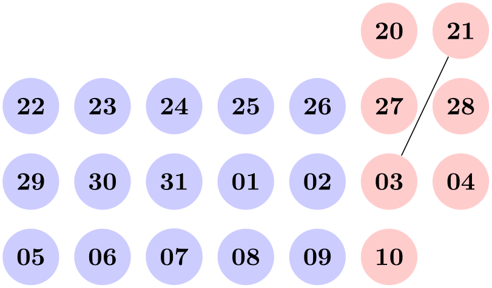

The TikZ and PGF Packages
Manual for version 3.1.10
Utilities
89 Date and Calendar Utility Macros¶
This section describes the package pgfcalendar.
-
\usepackage{pgfcalendar} % LaTeX ¶
-
\input pgfcalendar.tex % plain TeX
-
\usemodule[pgfcalendar] % ConTeXt
-
1. It provides functions for working with dates. Most noticeably, it can convert a date in ISO-standard format (like 1975-12-26) to a so-called Julian day number, which is defined in Wikipedia as follows: “The Julian day or Julian day number is the (integer) number of days that have elapsed since the initial epoch at noon Universal Time (UT) Monday, January 1, 4713 BC in the proleptic Julian calendar”. The package also provides a function for converting a Julian day number to an ISO-format date.
Julian day numbers make it very easy to work with days. For example, the date ten days in the future of 2008-02-20 can be computed by converting this date to a Julian day number, adding 10, and then converting it back. Also, the day of week of a given date can be computed by taking the Julian day number modulo 7.
-
2. It provides a macro for typesetting a calendar. This macro is highly configurable and flexible (for example, it can produce both plain text calendars and also complicated TikZ-based calendars), but most users will not use the macro directly. It is the job of a frontend to provide useful configurations for typesetting calendars based on this command.
This package can be used independently of pgf. It has two purposes:
89.1 Handling Dates¶
89.1.1 Conversions Between Date Types¶
-
\pgfcalendardatetojulian{⟨date⟩}{⟨counter⟩} ¶
-
1. It should start with a number representing the year. Use \year for the current year, that is, the year the file is being typeset.
-
2. The year must be followed by a hyphen.
-
3. Next should come a number representing the month. Use \month for the current month. You can, but need not, use leading zeros. For example, 02 represents February, just like 2.
-
4. The month must also be followed by a hyphen.
-
5. Next you must either provide a day of month (again, a number and, again, \day yields the current day of month) or the keyword last. This keyword refers to the last day of the month, which is automatically computed (and which is a bit tricky to compute, especially for February).
-
6. Optionally, you can next provide a plus sign followed by positive or negative number. This number of days will be added to the computed date.
-
• 2006-01-01 refers to the first day of 2006.
-
• 2006-02-last refers to February 28, 2006.
-
• \year-\month-\day refers to today.
-
• 2006-01-01+2 refers to January 3, 2006.
-
• \year-\month-\day+1 refers to tomorrow.
-
• \year-\month-\day+-1 refers to yesterday.
This macro converts a date in a format to be described in a moment to the Julian day number in the Gregorian calendar. The ⟨date⟩ should expand to a string of the following form:
Here are some examples:
The conversion method is taken from the English Wikipedia entry on Julian days.
Example: \pgfcalendardatetojulian{2007-01-14}{\mycount} sets \mycount to 2454115.
-
\pgfcalendarjuliantodate{⟨Julian day⟩}{⟨year macro⟩}{⟨month macro⟩}{⟨day macro⟩} ¶
This command converts a Julian day number to an ISO-date. The ⟨Julian day⟩ must be a number or TeX counter, the ⟨year macro⟩, ⟨month macro⟩ and ⟨day macro⟩ must be TeX macro names. They will be set to numbers representing the year, month, and day of the given Julian day in the Gregorian calendar.
The ⟨year macro⟩ will be assigned the year without leading zeros. Note that this macro will produce year 0 (as opposed to other calendars, where year 0 does not exist). However, if you really need calendars for before the year 1, it is expected that you know what you are doing anyway.
The ⟨month macro⟩ gets assigned a two-digit number representing the month (with a leading zero, if necessary). Thus, the macro is set to 01 for January.
The ⟨day macro⟩ gets assigned a two-digit number representing the day of the month (again, possibly with a leading zero).
To convert a Julian day number to an ISO-date you use code like the following:
\pgfcalendarjuliantodate{2454115}{\myyear}{\mymonth}{\myday}
\edef\isodate{\myyear-\mymonth-\myday}
The above code sets \isodate to 2007-01-14.
-
\pgfcalendarjuliantoweekday{⟨Julian day⟩}{⟨week day counter⟩} ¶
This command converts a Julian day to a week day by computing the day modulo 7. The ⟨week day counter⟩ must be a TeX counter. It will be set to 0 for a Monday, to 1 for a Tuesday, and so on.
Example: \pgfcalendarjuliantoweekday{2454115}{\mycount} sets \mycount to 6 (it was a Sunday).
-
\pgfcalendareastersunday{⟨year⟩}{⟨counter⟩} ¶
This command computes the date of Easter Sunday as a Julian date and stores it in ⟨counter⟩.
Example: \pgfcalendareastersunday{2019}{\mycount} sets \mycount to 2458595, which corresponds to 2019-04-21.
89.1.2 Checking Dates¶
-
\pgfcalendarifdate{⟨date⟩}{⟨tests⟩}{⟨code⟩}{⟨else code⟩} ¶
-
• all This test is passed by all dates.
-
• Monday This test is passed by all dates that are Mondays.
-
• Tuesday as above.
-
• Wednesday as above.
-
• Thursday as above.
-
• Friday as above.
-
• Saturday as above.
-
• Sunday as above.
-
• workday Passed by Mondays, Tuesdays, Wednesdays, Thursdays, and Fridays.
-
• weekend Passed by Saturdays and Sundays.
-
• equals=⟨reference⟩ The ⟨reference⟩ can be in one of two forms: Either, it is a full ISO format date like 2007-01-01 or the year may be missing as in 12-31. In the first case, the test is passed if ⟨date⟩ is the same as ⟨reference⟩. In the second case, the test is passed if the month and day part of ⟨date⟩ is the same as ⟨reference⟩.
For example, the test equals=2007-01-10 will only be passed by this particular date. The test equals=05-01 will be passed by every first of May on any year.
-
• at least=⟨reference⟩ This test works similarly to the equals test, only it is checked whether ⟨date⟩ is equal to ⟨reference⟩ or to any later date. Again, the ⟨reference⟩ can be a full date like 2007-01-01 or a short version like 07-01. For example, at least=07-01 is true for every day in the second half of any year.
-
• at most=⟨reference⟩ as above.
-
• between=⟨start reference⟩ and ⟨end reference⟩ This test checks whether the current date lies between the two given reference dates. Both full and short version may be given.
For example between=2007-01-01 and 2007-02-28 is true for the days in January and February of 2007.
For another example, between=05-01 and 05-07 is true for the days of the first week of May of any year.
-
• day of month=⟨number⟩ Passed by the day of month of the ⟨date⟩ that is ⟨number⟩. For example, the test day of month=1 is passed by every first of every month.
-
• end of month=⟨number⟩ Passed by the day of month of the ⟨date⟩ that is ⟨number⟩ from the end of the month. For example, the test end of month=1 is passed by the last day of every month, the test end of month=2 is passed by the second last day of every month. If ⟨number⟩ is omitted, it is assumed to be 1.
-
• Easter=⟨number⟩ This test checks whether the given date is Easter Sunday. The optional number can be used for offsets from Easter Sunday, e.g. Easter=-3 for Maundy Thursday, Easter=-2 for Good Friday, Easter=1 for Easter Monday. Since the dates of other Christian holidays are determined by the date of Easter, these can be accessed as well, e.g. Easter=39 for Feast of the Ascension, Easter=49 for Pentecost, and Easter=50 for Whit Monday.
-
• \pgfcalendarifdatejulian is the Julian day number of the ⟨date⟩ to be checked.
-
• \pgfcalendarifdateweekday is the weekday of the ⟨date⟩ to be checked.
-
• \pgfcalendarifdateyear is the year of the ⟨date⟩ to be checked.
-
• \pgfcalendarifdatemonth is the month of the ⟨date⟩ to be checked.
-
• \pgfcalendarifdateday is the day of month of the ⟨date⟩ to be checked.
This command is used to execute code based on properties of ⟨date⟩. The ⟨date⟩ must be a date in ISO-format. For this date, the ⟨tests⟩ are checked (to be detailed later) and if one of the tests succeeds, the ⟨code⟩ is executed. If none of the tests succeeds, the ⟨else code⟩ is executed.
Example: \pgfcalendarifdate{2007-02-07}{Wednesday}{Is a Wednesday}{Is not a Wednesday} yields Is a Wednesday.
The ⟨tests⟩ is a comma-separated list of key–value pairs. The following are defined by default:
In addition to the above checks, you can also define new checks. To do so, you must add a new key to the path /pgf/calendar/ using the \pgfkeys command. The job of the code of this new key is to possibly set the TeX-if \ifpgfcalendarmatches to true (if it is already true, no action should be taken) to indicate that the ⟨date⟩ passes the test setup by this new key.
In order to perform the test, the key code needs to know the date that should be checked. The date is available through a macro, but a whole bunch of additional information about this date is also available through the following macros:
For example, let us define a new key that checks whether the ⟨date⟩ is a Workers day (May 1st). This can be done as follows:
\pgfkeys{/pgf/calendar/workers day/.code=%
{
\ifnum\pgfcalendarifdatemonth=5\relax
\ifnum\pgfcalendarifdateday=1\relax
\pgfcalendarmatchestrue
\fi
\fi
}}
89.1.3 Typesetting Dates¶
-
\pgfcalendarweekdayname{⟨week day number⟩} ¶
This command expands to a textual representation of the day of week, given by the ⟨week day number⟩. Thus, \pgfcalendarweekdayname{0} expands to Monday if the current language is English and to Montag if the current language is German, and so on. See Section 89.1.4 for more details on translations.
Example: \pgfcalendarweekdayname{2} yields Wednesday.
-
\pgfcalendarweekdayshortname{⟨week day number⟩} ¶
This command works similarly to the previous command, only an abbreviated version of the week day is produced.
Example: \pgfcalendarweekdayshortname{2} yields Wed.
-
\pgfcalendarmonthname{⟨month number⟩} ¶
This command expands to a textual representation of the month, which is given by the ⟨month number⟩.
Example: \pgfcalendarmonthname{12} yields December.
-
\pgfcalendarmonthshortname{⟨month number⟩} ¶
As above, only an abbreviated version is produced.
Example: \pgfcalendarmonthshortname{12} yields Dec.
89.1.4 Localization¶
All textual representations of week days or months (like “Monday” or “February”) are wrapped with \translate commands from the translator package (it this package is not loaded, no translation takes place). Furthermore, the pgfcalendar package will try to load the translator-months-dictionary, if the translator package is loaded.
If you want to use the translator package, it has to be loaded before the pgfcalendar package or, when you are using the calendar TikZ library, before tikz. Otherwise it will not be properly detected.
The net effect of all this is that all dates will be translated to the current language setup in the translator package. See the documentation of this package for more details.
89.2 Typesetting Calendars¶
-
\pgfcalendar{⟨prefix⟩}{⟨start date⟩}{⟨end date⟩}{⟨rendering code⟩} ¶
-
• \pgfcalendarprefix The ⟨prefix⟩ parameter. This prefix is recommended for nodes inside the calendar, but you have to use it yourself explicitly.
-
• \pgfcalendarbeginiso The ⟨start date⟩ of range being typeset in ISO format (like 2006-01-10).
-
• \pgfcalendarbeginjulian Julian day number of ⟨start date⟩.
-
• \pgfcalendarendiso The ⟨end date⟩ of range being typeset in ISO format.
-
• \pgfcalendarendjulian Julian day number of ⟨end date⟩.
-
• \pgfcalendarcurrentjulian This TeX count holds the Julian day number of the day currently being rendered.
-
• \pgfcalendarcurrentweekday The weekday (a number with zero representing Monday) of the current date.
-
• \pgfcalendarcurrentyear The year of the current date.
-
• \pgfcalendarcurrentmonth The month of the current date (always two digits with a leading zero, if necessary).
-
• \pgfcalendarcurrentday The day of month of the current date (always two digits).
-
\ifdate{⟨tests⟩}{⟨code⟩}{⟨else code⟩} ¶
This command can be used to typeset a calendar. It is a very general command, the actual work has to be done by giving clever implementations of ⟨rendering code⟩. Note that this macro need not be called inside a {pgfpicture} environment (even though it typically will be) and you can use it to typeset calendars in normal TeX or using packages other than pgf.
Basic typesetting process. A calendar is typeset as follows: The ⟨start date⟩ and ⟨end date⟩ specify a range of dates. For each date in this range the ⟨rendering code⟩ is executed with certain macros setup to yield information about the current date (the current date in the enumeration of dates of the range). Typically, the ⟨rendering code⟩ places nodes inside a picture, but it can do other things as well. Note that it is also the job of the ⟨rendering code⟩ to position the calendar correctly.
The different calls of the ⟨rending code⟩ are not surrounded by TeX groups (though you can do so yourself, of course). This means that settings can accumulate between different calls, which is often desirable and useful.
Information about the current date. Inside the ⟨rendering code⟩, different macros can be access:
The \ifdate command. Inside the \pgfcalendar the macro \ifdate is available locally:
This command has the same effect as calling \pgfcalendarifdate for the current date.
Examples. In a first example, let us create a very simple calendar: It just lists the dates in a certain range.
20 21 22 23 24 25 26 27 28 29 30 31 01 02 03 04 05 06 07 08 09 10
\usepackage {pgfcalendar}
\pgfcalendar{cal}{2007-01-20}{2007-02-10}{\pgfcalendarcurrentday\ }
Let us now make this a little more interesting: Let us add a line break after each Sunday.
20 21
22 23 24 25 26 27 28
29 30 31 01 02 03 04
05 06 07 08 09 10
\usepackage {pgfcalendar}
\pgfcalendar{cal}{2007-01-20}{2007-02-10}
{
\pgfcalendarcurrentday\
\ifdate{Sunday}{\par}{}
}
We now want to have all Mondays to be aligned on a column. For this, different approaches work. Here is one based positioning each day horizontally using a skip.
20 21
22 23 24 25 26 27 28
29 30 31 01 02 03 04
05 06 07 08 09 10
\usepackage {pgfcalendar}
\pgfcalendar{cal}{2007-01-20}{2007-02-10}
{%
\leavevmode%
\hbox to0pt{\hskip\pgfcalendarcurrentweekday cm\pgfcalendarcurrentday\hss}%
\ifdate{Sunday}{\par}{}%
}
Let us now typeset two complete months.
1 2 3 4 5 6 7
8 9 10 11 12 13 14
15 16 17 18 19 20 21
22 23 24 25 26 27 28
29 30 31
February1 2 3 4
5 6 7 8 9 10 11
12 13 14 15 16 17 18
19 20 21 22 23 24 25
26 27 28
\usepackage {pgfcalendar}
\pgfcalendar{cal}{2007-01-01}{2007-02-28}{%
\ifdate{day
of
month=1}{
\par\bigskip\hbox to7.5cm{\itshape\hss\pgfcalendarshorthand mt\hss}\par
}{}%
\leavevmode%
{%
\ifdate{weekend}{\color{black!50}}{\color{black}}%
\hbox to0pt{%
\hskip\pgfcalendarcurrentweekday cm%
\hbox to1cm{\hss\pgfcalendarshorthand d-}\hss%
}%
}%
\ifdate{Sunday}{\par}{}%
}
For our final example, we use a {tikzpicture}.

\usepackage {pgfcalendar}
\begin{tikzpicture}
\pgfcalendar{cal}{2007-01-20}{2007-02-10}{%
\ifdate{workday}
{\tikzset{filling/.style={fill=blue!20}}}
{\tikzset{filling/.style={fill=red!20}}}
\node (\pgfcalendarsuggestedname) at
(\pgfcalendarcurrentweekday,0)
[anchor=base,circle,filling] {\pgfcalendarcurrentday};
\ifdate{Sunday}{\pgftransformyshift{-3em}}{}%
}
\draw (cal-2007-01-21) --
(cal-2007-02-03);
\end{tikzpicture}
-
\pgfcalendarshorthand{⟨kind⟩}{⟨representation⟩} ¶
-
• The minus sign selects the shortest numerical representation possible (no leading zeros).
-
• The equal sign also selects the shortest numerical representation, but a space is added to single digit days and months (thereby ensuring that they have the same length as other days).
-
• The zero digit selects a two-digit numerical representation for days and months. For years it is allowed, but has no effect.
-
• The letter t selects a textual representation.
-
• The dot selects an abbreviated textual representation.
This command can be used inside a \pgfcalendar, where it will expand to a representation of the current day, month, year or day of week, depending on whether ⟨kind⟩ is d, m, y or w. The ⟨representation⟩ can be one of the following: -, =, 0, ., and t. They have the following meanings:
Normally, you should say \let\%=\pgfcalendarshorthand locally, so that you can write \%wt instead of the much more cumbersome \pgfcalendarshorthand{w}{t}.
ISO form: 2007-01-20, long form: Saturday, January 20, 2007
\usepackage {pgfcalendar}
\let\%=\pgfcalendarshorthand
\pgfcalendar{cal}{2007-01-20}{2007-01-20}
{ ISO
form:
\%y0-\%m0-\%d0, long
form:
\%wt, \%mt
\%d-, \%y0}
-
\pgfcalendarsuggestedname ¶
This macro expands to a suggested name for nodes representing days in a calendar. If the ⟨prefix⟩ is empty, it expands to the empty string, otherwise it expands to the ⟨prefix⟩ of the calendar, followed by a hyphen, followed by the ISO format version of the date. Thus, when the date 2007-01-01 is typeset in a calendar for the prefix mycal, the macro expands to mycal-2007-01-01.